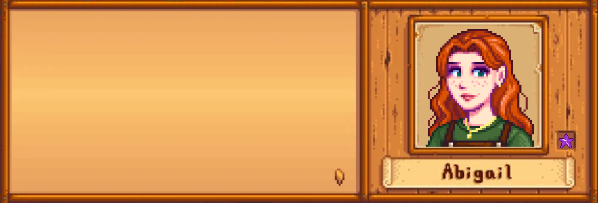

One Year of Us
Our Adventures
Game
Slide Show
Home
Love Letter
days since me became we
0

Hello my love, hope you are enjoying the site! I just wanted to stop by and tell you we've played 31 hours and 46 minutes in StardewValley